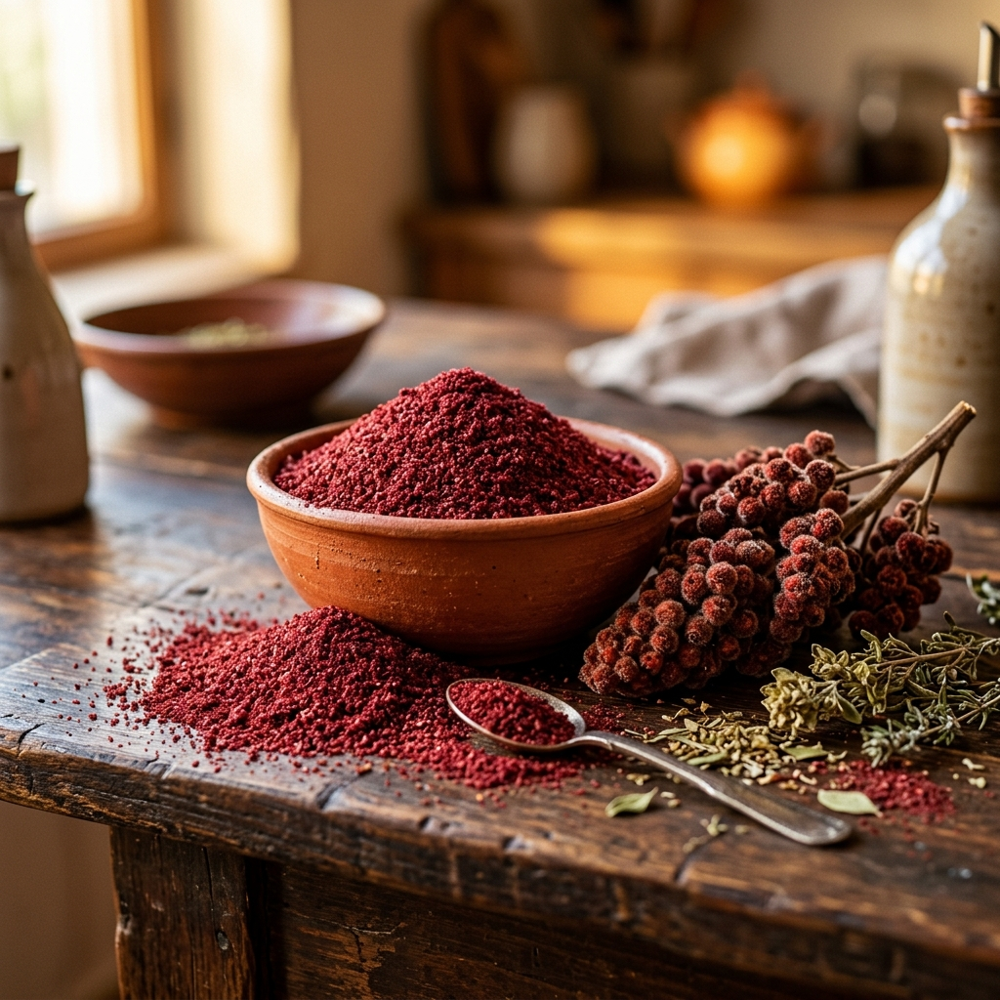

Sumach Pulver (Sumak): Das zitronig-fruchtige Wundergewürz
Warum das rubinrote Beerenpulver der anatolischen Wildsträucher der weltweite Spitzenreiter bei der Neutralisierung freier Radikale ist.

Lange bevor die Zitrone durch Handelskarawanen den Mittelmeerraum erreichte, verlieh ein wilder roter Strauch den Speisen des Orients ihre erfrischende Säure: der Gerber-Sumach (Rhus coriaria). Heute sorgt dieses uralte Gewürz in der Ernährungswissenschaft für weltweites Aufsehen.
In der anatolischen Küche ist Sumach (türkisch: Sumak) von keinem Mezze-Tisch wegzudenken. Doch hinter dem rubinroten Pulver steckt ein biochemisches Kraftpaket: Sumach besitzt einen der höchsten jemals gemessenen ORAC-Werte aller pflanzlichen Lebensmittel. Bei Anadoa Naturhaus beziehen wir unseren Sumach aus unberührtem Wildwuchs der südostanatolischen Bergregionen.
Der ORAC-Spitzenreiter: Über 312.000 Einheiten Zellschutz
Der ORAC-Wert (Oxygen Radical Absorbance Capacity) beziffert die Fähigkeit von Nahrungsmitteln, destruktive Sauerstoffradikale im Körper unschädlich zu machen. Während Heidelbeeren (ca. 4.600) oder Granatäpfel (ca. 4.400) oft als Superfoods gefeiert werden, sprengt reiner wilder Sumach alle Dimensionen: Er erreicht einen unfassbaren Wert von über 312.000 µmol TE pro 100 Gramm.
Diese gigantische Schutzwirkung verdankt Sumach seiner dichten Konzentration an Anthocyanen, hydrolysierbaren Tanninen, Flavonoiden (wie Myricetin und Quercetin) sowie Äpfelsäure und Vitamin C. Es schützt Gefäßwände, wirkt entzündungshemmend und beugt oxidativem Stress vor.
Die wichtigsten gesundheitlichen Vorteile im Überblick
4 Gründe, warum Sumach auf jeden Teller gehört:
- Natürlicher Blutzucker-Stabilisator: Klinische Studien zeigen, dass der regelmäßige Verzehr von Sumachpulver die Insulinempfindlichkeit verbessert und glykierte Hämoglobinwerte (HbA1c) günstig beeinflussen kann.
- Perfekter Salzersatz bei Bluthochdruck: Die erfrischend herbe Fruchtsäure stimuliert die Geschmacksknospen so intensiv, dass man Gerichte mit 50 % weniger Kochsalz würzen kann, ohne Geschmack einzubüßen.
- Verdauungsfördernd & krampflösend: Die Tannine regen die Magensaftsekretion an und wirken antibakteriell gegen unerwünschte Darmkeime.
- Natürlicher Muskelschutz: Aufgrund der hohen Flavonoiddichte wird Sumachsaft im Sport zur Linderung von Muskelkater und trainingsinduzierten Mikrotraumata geschätzt.
Die Kunst der anatolischen Zwiebel-Marinade
Haben Sie sich je gefragt, warum rohe Zwiebeln in anatolischen Restaurants so wunderbar zart, mild und bekömmlich schmecken, ohne den typischen scharfen Nachgeschmack zu hinterlassen? Das Geheimnis heißt Sumach-Knetung (Sumaklı Soğan):
Schneiden Sie eine rote Zwiebel in feine Halbringe. Bestreuen Sie sie großzügig mit 1-2 Teelöffeln Anadoa Sumach Pulver und einer Prise Meersalz. Massieren Sie das Gewürz für 30 Sekunden sanft mit den Fingern in die Zwiebeln ein. Die natürlichen Fruchtsäuren spalten die brennenden Schwefelverbindungen sofort auf – das Ergebnis ist ein himmlisch knackiger, rubinroter Zwiebelsalat!
Vielseitige Rezeptideen in der modernen Gourmetküche
- Auf Salaten & Bowls: Verleiht Blattsalaten, Gurkenscheiben oder Quinoa-Bowls einen unwiderstehlichen frischen Kick (siehe auch unser Granatapfel-Walnuss-Salat Rezept).
- Zu Geflügel, Lamm & Grillfisch: Vor oder nach dem Braten über Fleisch oder Fisch streuen – die Säure zartigt das Fleisch und hebt die Aromen.
- Auf cremigen Dips & Hummus: Ein unverzichtbares Topping für klassischen Hummus, Joghurt-Dips (Cacık) oder Guacamole.
Fazit: Das rote Gold des Orients
Sumach ist weit mehr als ein exotisches Gewürz – es ist ein biochemisches Phänomen und ein unverzichtbarer Begleiter für alle, die Genuss mit kompromissloser Zellgesundheit verbinden möchten. Bereichern Sie Ihre Küche mit dem reinen, sonnengetrockneten Wildwuchs-Sumach von Anadoa.